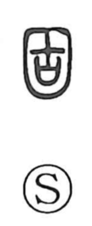

固

Uncategorized
Kun: katameru, katamaru, katai, motoyori | On: ko
hard ・ firm ・ fixed ・ to harden ・ to solidify ・ originally
Explanation
Shirakawa reads 固 as a compound that places the ancient graph 古 inside an enclosing frame. He takes 古 to depict a ritual setting: a sacred shield placed upon the covenant vessel (sai) that housed written prayers, so their efficacy would endure. With the outer enclosure (kakoi) added, the whole form conveys enclosing and securing that power, giving the senses of making something firm, hard, and fixed. From this idea of fixing in place come usages such as kotei “to fix,” and even the adverbial 固より, “from the very first.”